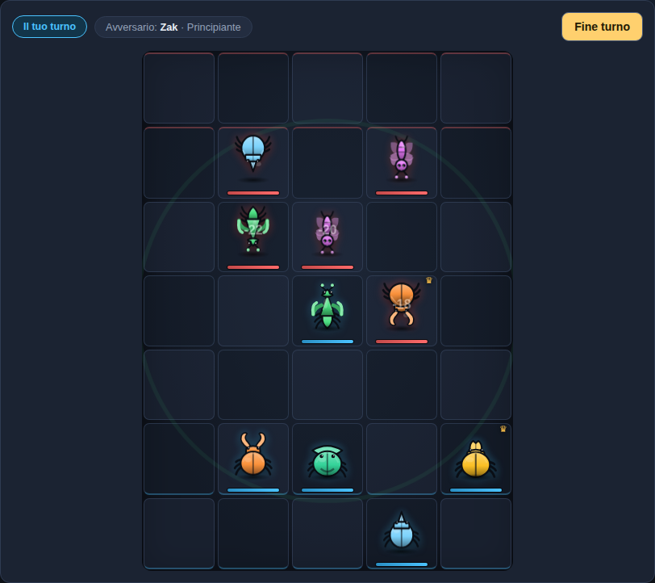
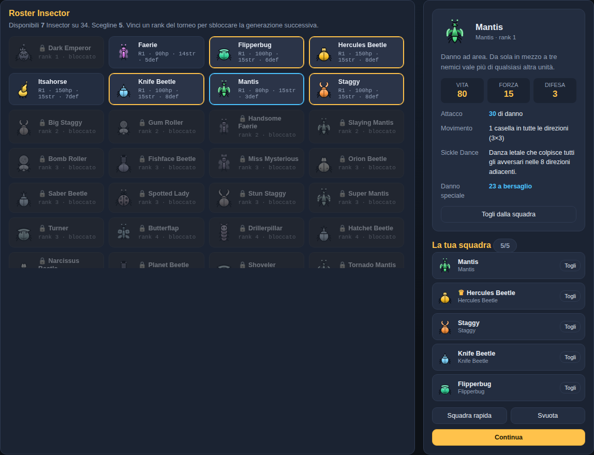
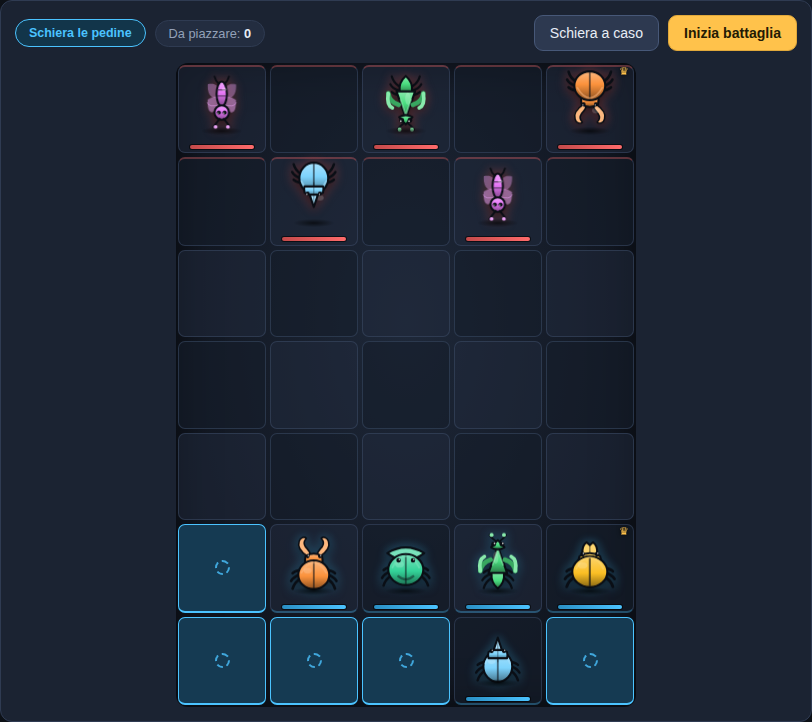
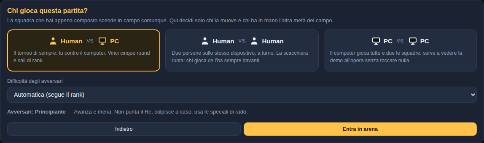
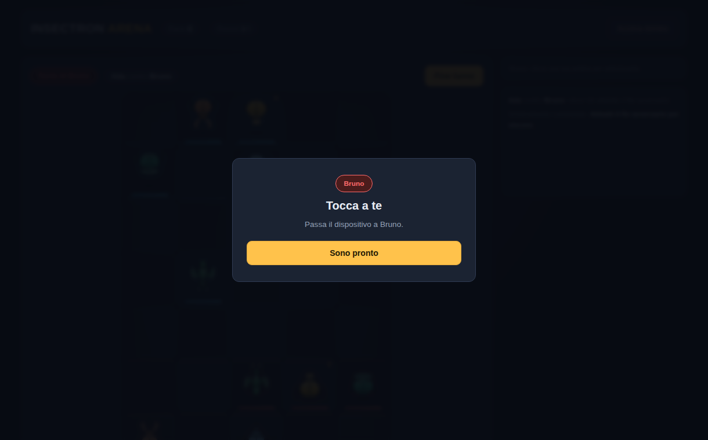

Come si gioca
Le regole stanno in un minuto. La profondità arriva dalle mosse speciali, tutte diverse.
Scegli la squadra
Cinque Insector da un roster di 34, ognuno con la mossa speciale della propria famiglia. Uno di loro è il Re: se muore, la partita finisce.
Schiera le pedine
Le posizioni le decidi tu, entro le due file più vicine. Le unità lente davanti, il Re coperto dietro.
Un movimento, un'azione
Ogni pedina si sposta una volta per turno e poi può attaccare o usare la speciale. Attaccare chiude il suo turno.
Butta fuori chi ti ostacola
Spingere un avversario oltre il bordo lo elimina all'istante, a prescindere dai punti vita. Vale anche contro il Re.
Sta' in diagonale
Quasi tutte le mosse speciali colpiscono solo in orizzontale e verticale. Mettersi in diagonale è una difesa vera.
Scegli chi gioca
È la prima cosa che vedi: Human vs PC per il torneo, Human vs Human sullo stesso dispositivo, PC vs PC per guardarla giocare da sola. Col computer in campo scegli anche quanto è bravo.
In due, a turno
Ognuno sceglie squadra e Re in privato e schiera al coperto, poi ci si passa lo schermo. La scacchiera ruota a ogni consegna: chi gioca ha sempre le sue pedine davanti. Nessun account, niente connessione.
Sali di rank
Sei livelli di torneo, da E a S. Ognuno sblocca una generazione di Insector più forte — e avversari che ragionano meglio.
Qualche schermata
Tutta la grafica è disegnata da codice: non c'è un solo file immagine dentro al gioco. Zampe, riflessi e animazioni compresi.




Com'è stato verificato
L'equilibrio non è a occhio: è misurato. Ogni regola ha un test che la controlla.
| Rank | Avversari | Vittorie del giocatore |
|---|---|---|
| E | Principianti | 98% |
| D | Normali | 95% |
| C | Normali | 81% |
| B | Esperti | 55% |
| A | Esperti | 60% |
| S | Campioni | 17% |
- 1800 battaglie simulate a ogni modifica delle regole, per tenere l'equilibrio sotto controllo.
- 222 controlli automatici su meccaniche, schieramento, movimento, difficoltà, accessibilità, scelta della modalità, partita in due, rotazione della scacchiera e animazione delle pedine.
- Si gioca anche solo da tastiera. La scacchiera è una griglia ARIA: frecce per muoversi, Invio per selezionare, e ogni casella ha un nome parlato per chi usa uno screen reader.